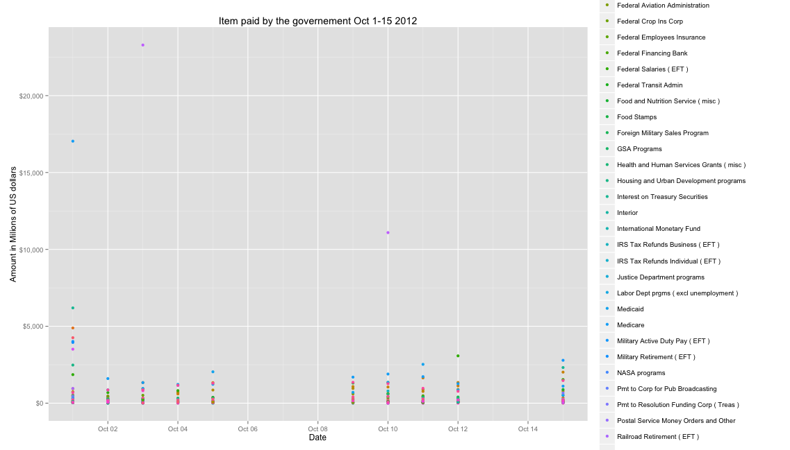
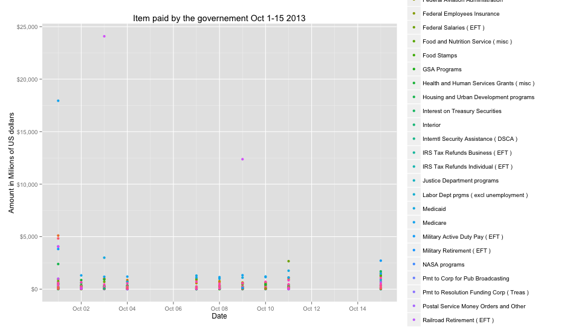

Created by Carlo Torniai / @carlotorniai
In order to understand the data I started with the first table T1. The documentation about T1 states that the table “how much money does Uncle Sam have in his checking account on any given day”
I want to build a simple cumulative view of the the amount of money in each account at the beginnig fo the fiscal year for the time frame we had at our disposal.
We can notice in 2008 the start fo the Supplementing Financing Programs and the drop in the Tax and Loan Note accounts.
I was also interested in seeing more closeley the trend of the Tax and Loan Note Account.
Trend between 2005 and 2008
2008-2011
Who didn't get paid during government shoutdown?
Trying to scatter plot the accounts with withdrawals between 2012...

... and 2013 Wasn't of much help.

Comparing Sept-Oct 2012 with Sept-Oct 2013
there were 20 payments missing this years:
In 2012 these items continued to be paid throughout October
While in 2013 none of these were paid after September 2013
While claimingg that all this was caused by the shutdown would required further analysis we can estimate how much the Govermnement saved in the first half of Octber compared to 2012
All these slides where artisanally edited by hand.
(not so) #VINTAGEHTML
{kind=link}
{kind=link}
{kind=link}
{kind=link}
{kind=link}
{kind=link}
{kind=link}